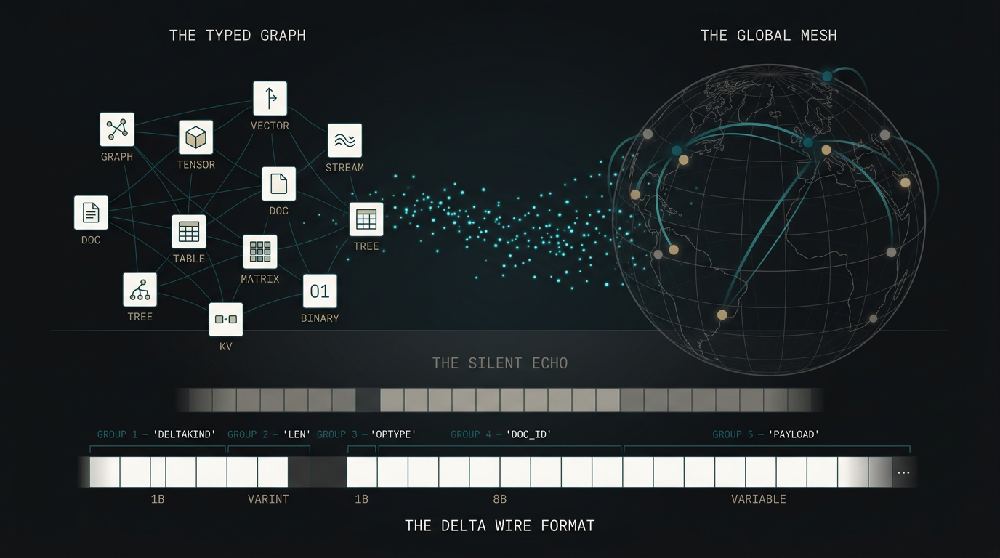
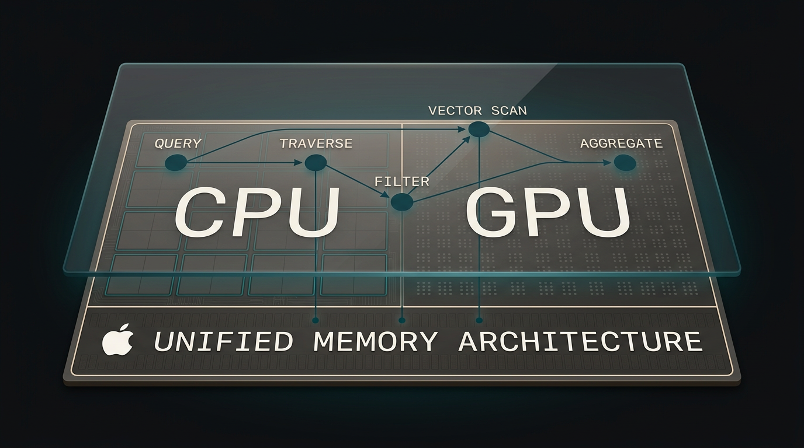
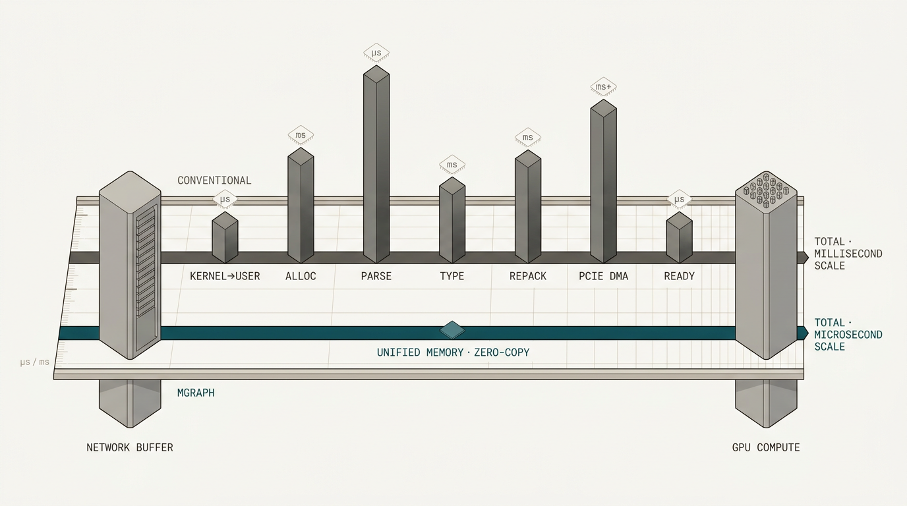
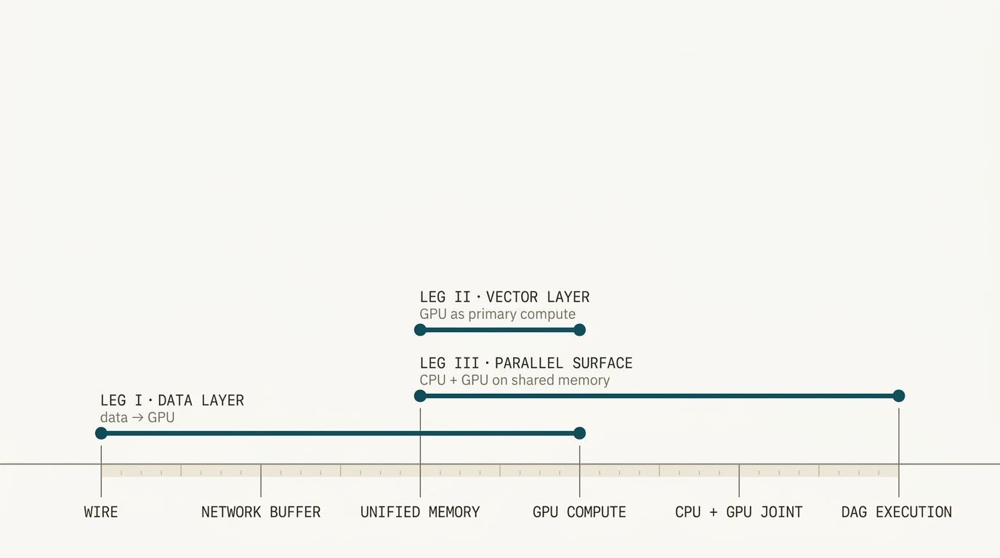
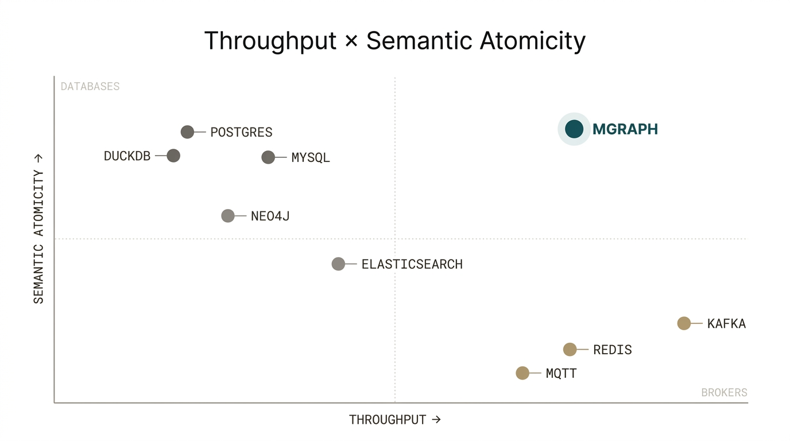

From wire to GPU on Apple Silicon.
Treating data flows as a compute primitive.

A data engine for complex data structures — trees, graphs, streams, tensors, tables, vectors.
Structure-aware. Zero-copy from network to compute. mgraph is data collaboration as a primitive.

Vector and relational database built for Apple Silicon’s unified memory.
Treats the GPU as primary compute. CPU and GPU on shared memory for a previously unseen class of operations.
Together, they provide a direct line from wire to GPU compute that was previously impossible.
Both are industry firsts. A structure-aware zero-copy data engine, and a database that treats the Apple Silicon GPU as primary compute. No existing system provides this path.

Each leg benches the architectural claim it rests on.

Structured payloads moved without translation at the boundary.
On-device vector retrieval on hardware every developer already owns.
A property unique to Apple’s unified memory architecture.
Structure-aware, zero-copy delta propagation at message-broker throughput — with database-grade atomic guarantees across complex types.
Delta propagation at Redis speeds, with database-like atomic commits on complex data types. No production system combines all of these today.
Throughput versus semantic atomicity across today’s systems.
Brokers give up structure for speed. Databases pay for structure in latency. The upper-right corner is empty — that’s what we bench against.

| Bench | Against | Measured |
|---|---|---|
| Throughput | Redis · Kafka | Ops per second. Latency percentiles. Payload scaling. |
| Atomics | Postgres · DuckDB | Table insert, vector update, stream append — single commit. Baselines must serialise structured payloads into JSON or BLOB columns; mgraph operates on them natively. |
The first vector database to leverage Apple Silicon’s GPU for retrieval — on-device, zero-dependency, on hardware every developer already owns.
Every Mac, iPad, and iPhone ships with a capable GPU. Today’s vector databases either leave it idle or route to a cloud service. msearch puts the full GPU in the developer’s hands.
| Bench | Against | Measured |
|---|---|---|
| Single-query latency | pgvector · Chroma · Qdrant | P50 / P99 latency. Recall at target accuracy. Cold-start behaviour. Identical Apple Silicon hardware. |
| Throughput at scale | pgvector · Chroma · Qdrant | QPS. Latency under load. Index-build throughput. Index sizes approaching unified memory capacity. |
| Energy per query | Milvus on NVIDIA | Joules per query at matched recall and latency. NVIDIA cloud-provisioned. |
CPU and GPU, coordinated on shared memory. A class of database operations available only on Apple Silicon.
GPUs are massively parallel. CPUs are optimally sequential. By coordinating their operations in shared memory, we deliver performance that no system outside Apple Silicon can match.
Against Postgres and DuckDB across latency and throughput, at varying data sizes.
Five workloads where the handoff cost disappears because there is no handoff.
One week per leg. One week to write.